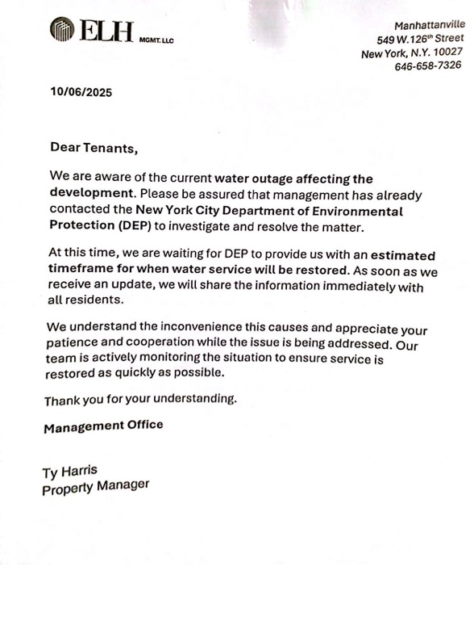
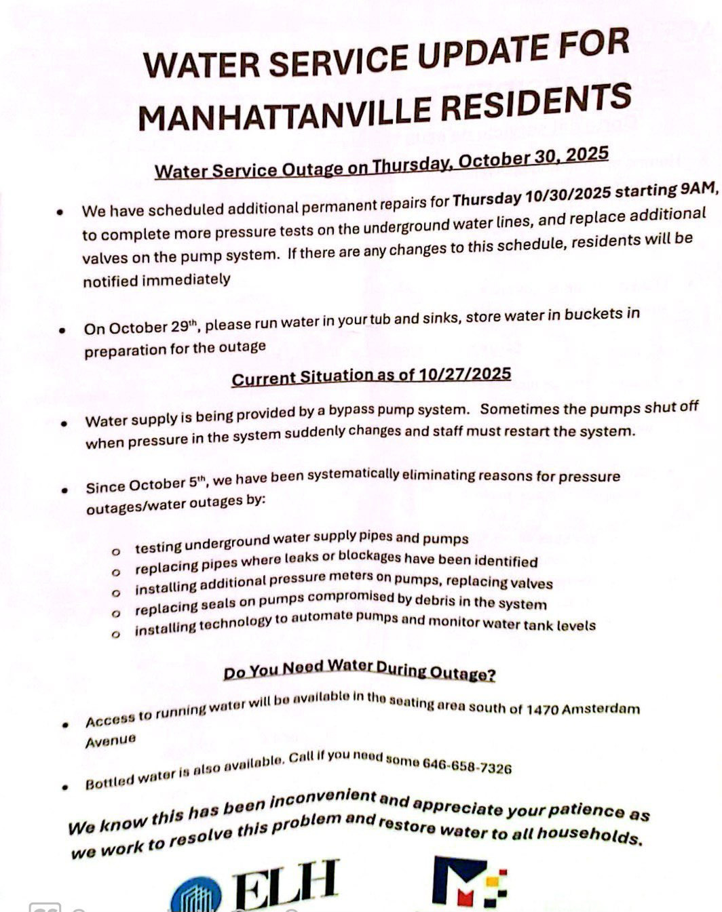
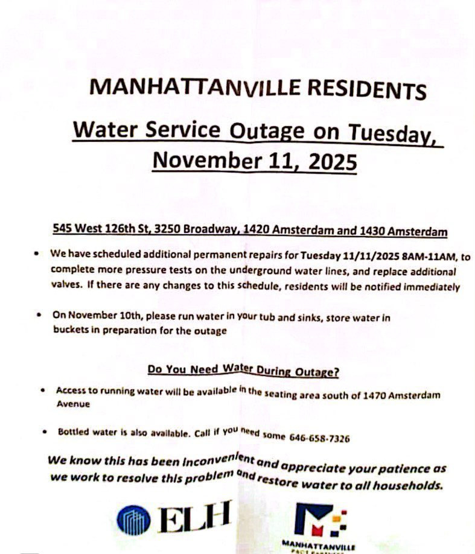

Following the privatization of Manhattanville Houses, residents were left without clean water for nearly a month
The sale of a nearby lot where new luxury apartments sit was supposed to finance repairs to the Manhattanville Houses. But ongoing issues still persist as residents battle continuous water outages.
Hundreds of residents of the Manhattanville Houses—a public housing project which includes six apartment buildings between West 129th and 133rd Street—were left without gas or clean water periodically since Oct. 6. While building management tackled repairs, residents relied on hot plates and stored water to adapt to the prolonged shutdowns.
Despite promised improvements, intended to be financed by the sale of an adjacent empty New York City Housing Authority site to luxury apartment developers, the weekslong water and gas outages signify ongoing issues residents of the housing community continue to face.
In 2022, NYCHA sold an empty site at 1440 Amsterdam Ave. to private developers for $28 million. The funds from the sale of the lot, which is now the site of a luxury apartment building, were intended to exclusively finance repairs and upgrades to the Manhattanville complex.
The water and gas outages in the Manhattanville complex follow the housing project’s December 2024 transition from public housing to privatized housing. This was accomplished through the Rental Assistance Demonstration program, which the Permanent Affordability Commitment Together initiative introduced in 2016. The program enabled NYCHA to convert Section 9 public housing into Section 8 project-based vouchers—which subsidizes low- and moderate-income households with funds for renting privately-owned housing. It effectively transferred public housing leases to private landlords.
The 2016 program relies on the government partnering with private and nonprofit entities. Under the PACT partnership with NYCHA, $445 million in funding allowed Gilbane Development Company, Apex Building Group, and West Harlem Group Assistance to begin renovating former public housing apartments.
“A lot of the residents were not fully aware of what the outcome was going to be on this conversion. So I tried to not only guide my family, but whatever other families need particular information,” longtime Manhattanville resident Derek Haynes told Spectator, describing how he spread awareness of the private conversion.
In the year since Manhattanville Houses underwent the conversion, residents have faced persistent problems in the apartment complex.
Three months after the new tower adjacent to Manhattanville Houses was opened to the public in the Affordable Housing Lottery, residents of Manhattanville Houses are seeing continuous problems with gas and water. Ongoing issues and outages have left them feeling “neglected” as 1440 Amsterdam Ave. thrives.
“I’ve lived in Manhattanville since September of 2018, and it’s not the best experience, even after partnerships. When they don’t want to deal with something, they just ignore it,” Loretta Thomas, a Manhattanville resident, said.
In an Oct. 6 letter, property manager Ty Harris informed residents about a current water outage affecting the development. According to Harris’ letter, NYCHA management had already contacted the New York City Department of Environmental Protection to investigate the matter.
A few days later, on Oct. 9, ELH Management and Manhattanville’s PACT team updated tenants regarding the ongoing water outage. According to letters obtained by Spectator, residents were informed that water was being supplied by an emergency bypass system and bottled water would be distributed to residents during the outage.
On the same day as the Oct. 9 announcement, Thomas told Spectator she had learned of the water issues before other residents from a building worker who worked with the pipes. “Nobody else would have told us that, but the super told me,” Thomas said.
“The Environmental Protection Agency … turned off the water over here in Manhattanville Houses. That doesn’t make any sense and they didn’t warn anybody, they didn’t say anything to ELH or to NYCHA,” Paul Ortiz, longtime Manhattanville resident, told Spectator on Oct. 10.
Through notices posted by APEX Building Group and Gilbane Development Company on Oct. 15, Buildings 2, 5, and 6 learned that their running water would be temporarily shut off on Oct. 17 from 10 a.m. to 4 p.m. due to additional valve and plumbing repairs. The notices, distributed by building management, also announced ongoing gas issues in the building. Tenants were encouraged to store water in advance for essential needs.
“Last month, a gas line leak was discovered in 3250 Broadway and gas service was disconnected, impacting 40 apartments,” Kelly Magee, public relations representative for ELH Management, wrote in a Nov. 7 statement to Spectator. “A licensed plumber was engaged to repair and pressure test the affected line, a process that took about three weeks to complete which is typical for this type of repair. Once the repairs were finished, Con Edison conducted the required inspection, which added roughly another week and a half to the timeline. All work has now been completed, and gas service has been fully restored to all affected apartments.”
On Oct. 9, Thomas told Spectator that the gas had been out since Aug. 3 and residents had received “cheap hot plates” as a response to the outage.
In an Oct. 27 update, residents were informed that the bypass pump system that provides water would sometimes shut off when the water pressure changed, which would require staff interference.
That same day, Manhattanville residents received further updates from ELH Management and Manhattanville’s PACT partners about additional permanent repairs. Residents were advised to store water in tubs, sinks, and buckets on Oct. 29 to prepare for the outage.
Thomas, who successfully sued the Manhattanville Houses for past water issues in 2018 when she first moved in, holds a court order guaranteeing she cannot be left without a continuous supply of water. For her, navigating frequent water issues is especially frustrating.
The repairs were completed on Oct. 31 by PACT partners, including preventative maintenance and the repair of several broken pipe lines. Despite completion, the outages have broken trust between tenants and management.
“I get my distilled water from the supermarket,” Ortiz said.
On Nov. 7, a PACT representative reported additional construction to fix ongoing water pressure issues caused by sediment trapped in the building’s pipes due to nearby construction.
“During these scheduled shut-offs, ownership supplied alternate water to tenants. The affected pipe, along with the water tank and related valves in the tank room, have since been fully repaired. All repair work was completed within approximately two weeks, and full water service has been restored,” Magee wrote in the Nov. 7 statement. “Ownership met with NYCHA and the Tenant Association about the shut-offs as they were occurring. There is one additional piece of work to further improve water pressure scheduled for the upcoming week, to which residents will be alerted.”
On Monday, Nov. 10, residents received a flier on their door detailing additional repairs scheduled for Tuesday, Nov. 11. Residents were once again encouraged to store water in advance of the outage.
Scrollama: Sticky Side Example
Oct. 6: A letter from Harris to Manhattanville tenants informed residents about a water
outage affecting the development. Harris wrote that management had already contacted the New
York City Department of Environmental Protection to investigate the matter.
Oct. 9: ELH Management and Manhattanville PACT partners informed residents that an emergency
bypass system was put in place providing water and that bottled water would be distributed
to residents during the emergency period.
Oct. 9: The update informed residents that water was briefly turned off on Oct. 6. After
being turned back on, water supply pipes were found to be clogged with sediment.
Oct. 15: Buildings 2, 5, and 6 received notice from APEX Building Group and Gilbane
Development Company that their running water would be temporarily shut off.
Residents of 3250 Broadway received notice on Oct. 15 about gas issues in the building.
Oct. 27: A managament update informed residents were informed that water was being provided
with a bypass pump system that sometimes shuts off when water pressure changes, requiring
staff interference.
Oct. 27: Manhattanville residents received further updates about additional permanent repairs
for that day. Residents were informed that they would need to store water in buckets in
preparation for the outage.
Oct. 31: ELH Management and Manhattanville PACT completed the water repair. Additional
preventive maintenance was also performed at that time, including the repair of several
broken pipelines.
Nov. 7: A PACT representative wrote that additional construction would be undertaken to fix
ongoing water pressure issues.
Nov. 11: Residents were encouraged to store water in advance of another outage.



As residents continue to face recurring outages and uncertainty about lasting repairs, the 1440 Amsterdam Ave. luxury tower has become a point of tension. Residents say they have yet to see meaningful improvements in their own buildings even though the sale of the property promised to be a source of funding for long-overdue upgrades at Manhattanville Houses.
When the empty lot was initially sold, NYCHA affirmed that the funding generated by the sale would be used explicitly for comprehensive building repairs and upgrades at Manhattanville Houses.
After the lots were sold by NYCHA to Grid Group, a New York City-based real estate company, Grid Group and Gluck+ Architecture constructed the 28-story luxury building at 1440 Amsterdam Ave. NYCHA Press Secretary Michael Horgan wrote in a statement to Spectator that the luxury building “will include 147 rent-restricted apartments, with current NYCHA residents receiving priority for 25 percent of these apartments.” The units are listed at 130 percent of the area’s median income, which is $25,057 for NYCHA public housing families.
“There’s no relationship between the residents at Manhattanville and that tower,” Haynes said, “We can’t afford it.”
Haynes added that Manhattanville residents feel “sad,” particularly because transparency about the tower’s spaces was something that was “discussed and promised.”
In August, the tower opened in the Affordable Housing Lottery.
Haynes also noted the vulnerability of the Manhattanville Houses to development pressure due to their location between Columbia and the City College of New York, which both have plans for expansion.
“Based on the information that I’m getting from people calling me, there seems to be no affordable housing in that tower,” Haynes said.
Ortiz expressed concerns about the impacts on health from ongoing issues with water quality. For Manhattanville residents, poor communication amid ongoing problems in the building has deepened distrust. The presence of 1440 Amsterdam Ave. has led to further tensions.
“Something’s going on that they are not telling us,” Ortiz said.